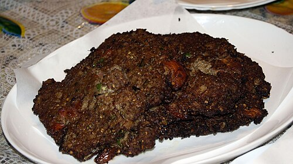

Kebab

Chapli kebab is a spicy, flavorful minced meat patty originating from South Asia, especially popular in Pakistan and Afghanistan. Made with ground beef or lamb, it’s seasoned with spices like coriander, cumin, and chilies, and mixed with onions and tomatoes for extra juiciness. Shaped into flat, round patties, chapli kebabs are shallow-fried until golden and crispy. They are often served with naan, chutneys, or salad, making for a deliciously hearty dish.
The juicy richness of chapli kebab complements the smoky essence of grilled dishes, making it a versatile favorite. Its crispy edges and tender interior provide a delightful contrast of textures, perfect for pairing with fresh salads or warm flatbreads.
Ingredients
- 1 egg, beaten
- 1 pound ground beef
- 1 red onion, finely chopped
- 1 tomato, finely chopped
- 1/4 cup finely chopped cilantro
- 1/4cup finely chopped mint
- 2 teaspoons ginger-garlic paste
- 2 teaspoons coriander seeds, crushed
- 1 teaspoon salt
- 2 teaspoon ground cumin
- 1.5 teaspoon ground cayenne pepper
- 2 tomato, sliced into rounds
- 0.5 cup vegetable oil for frying, or more as needed
Steps
- Coat a small skillet with cooking oil and place over medium-high heat. Cook and stir beaten egg in the hot skillet until scrambled and set, 3 to 5 minutes.
- Combine scrambled egg, beef, onion, chopped tomato, cilantro, mint, ginger-garlic paste, coriander seeds, salt, cumin, and cayenne pepper in a large bowl; mix by hand until well combined. Shape mixture into patties. Press a tomato slice into the center of each patty.
- Heat oil in a deep skillet to 375 degrees F (190 degrees C). Cook patties in hot oil in batches until charred, 4 to 6 minutes per side.